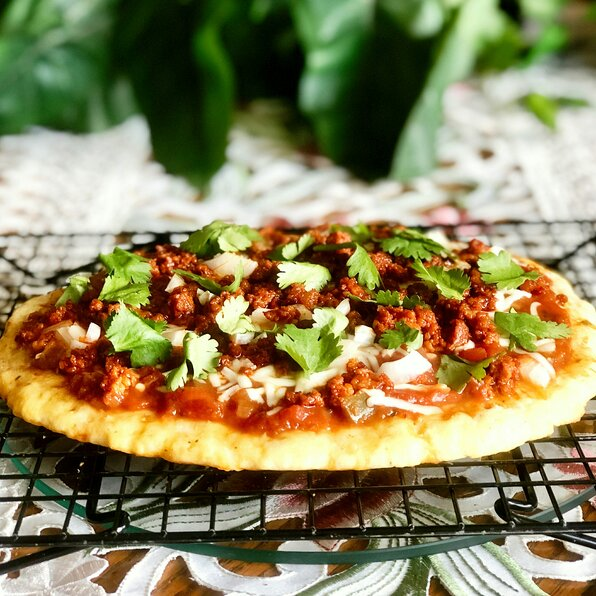

Keto Pizza

Description
Ingredients
- 2 1/2 cups (270g) almond flour
- 3 1/4 cups (480g) shredded mozzarella cheese
- 1/4 cup (30g) cream cheese (softened)
- 1/4 cup (30g) pizza sauce of choice
- 1/4 cup (30g) sliced baby bella mushrooms
- 8 oz (226g) mozzarella ball
- 1 teaspoon (1g) oregano
Tools needed
- 1 large microwave safe bowl
- 3 small microwave safe bowls
- 1 spatula or mixing spoon
- 1 baking sheet or pizza stone
- 1 rolling pin
- 1 basting brush
- 1 small saute pan
- Parchment paper
Steps
- Preheat oven to 400°F(205°C). If using a pizza stone, place it in the oven.
- Place cream cheese in small bowl and set aside to soften.
- Cut the mushrooms into 1/2 inch(12mm) pieces.
- In a small saute pan, place butter or cooking oil and set to medium high heat.
- Place the mushrooms in the saute pan and cook until soften (4-5 min). Remove from heat and set aside in
a small bowl.
- Set aside a 1/4 cup(24g) of mozzarella in a small bowl.
- On a large flat surface, lay out a sheet of Parchment paper large enough to rollout your dough.
Cut a second sheet of the same size and set aside.
- In a large microwave safe bowl, combine almond flour, 3 cups(384g) of mozzarella, soften
creamcheese, and oregano. Place the mixture in the microwave and cook for 1 minute at a time until you
can evenly mix the dough.
- With the dough still warm, place the dough in the middle of the sheet of Parchment paper
and place the second sheet on top.
- Using the rolling pin, rollout the dough until about 1/2 inch(12mm) thick.
- Transfer the pizza crust onto a baking sheet and place in the preheated oven for 10-12 min. If using a
pizza stone, place the crust (with Parchment paper) directly on the stone.
- Once the
Notes & Tips
- Use this recipe as a template, add your favorite toppings!
- Freeze the raw pizza crust (or a second one) for an easy dinner in the future.
- Saute the mushrooms for a richer flavor.